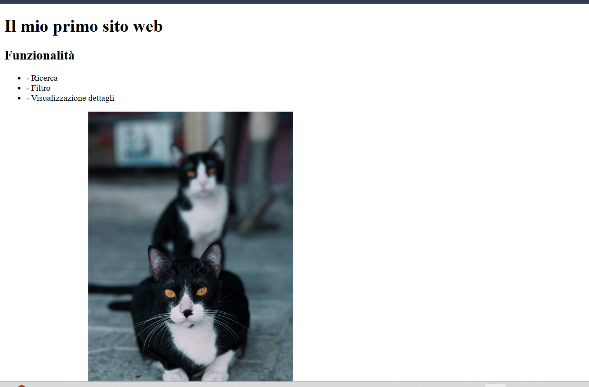

Funzionalità
La pagina raccoglie comandi Git, esempi ed errori comuni.
| Comando | Link | Descrizione |
|---|---|---|
| git status | Documentazione | Mostra lo stato della repository |
| git add | Documentazione | Aggiunge modifiche allo staging |

Questa schermata mostra la pagina principale del progetto.

La mia prima descrizione
Documentazione per lavorare con Git
La pagina raccoglie comandi Git, esempi ed errori comuni.
| Comando | Link | Descrizione |
|---|---|---|
| git status | Documentazione | Mostra lo stato della repository |
| git add | Documentazione | Aggiunge modifiche allo staging |